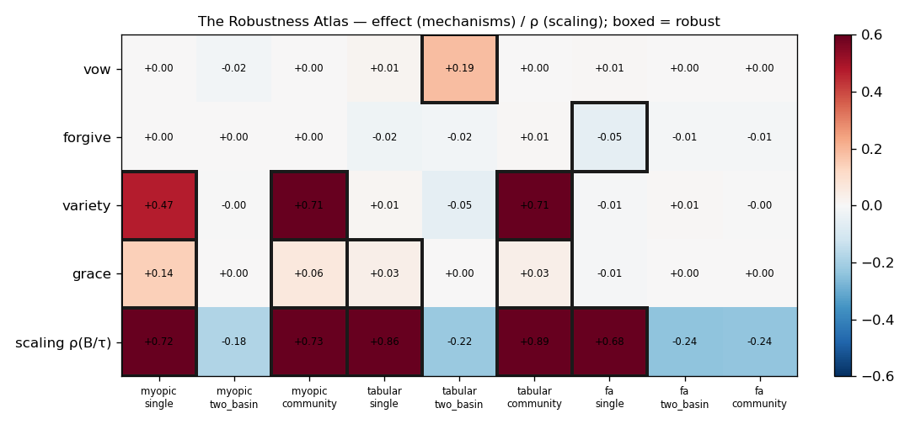

WORKGROUND · ATLAS
Lab V — The Robustness Atlas
The engine made thousands of runs free, so the question stopped being "does mechanism X help?" and became "in which of all the instruments does it help?" The atlas runs every corpus mechanism across {myopic, tabular, function-approx} agents × {single-basin, two-basin, community} worlds, plus the scaling law and a detector-honesty audit, on the Rust engine. Seven subagents ran one slice each; this is the synthesis.
site/workground/atlas/*.json; each slice has its own page.
The headline: almost nothing is universal
Across 9 instruments per mechanism, robustly-positive cells:
| Mechanism | robust + | robust − | where it holds | verdict |
|---|---|---|---|---|
| grace | 4 / 9 | 0 | myopic·single/community, tabular·single/community (all tiny) | the "best", and it's 4/9 of small effects |
| variety | 3 / 9 | 0 | myopic·single (+0.47), myopic·community (+0.71), tabular·community (+0.71) — never under FA, never two-basin | lab3 was right in its one cell, wrong to generalise |
| vow | 1 / 9 | 0 | only tabular·two-basin (+0.186) | lab4's "vow is FA-shaped" did not replicate |
| forgive | 0 / 9 | 1 | only robust cell is fa·single, and it is harmful (−0.053); myopic = exact no-op (no replay) | operationally inert everywhere |
| scaling law (τ) | 5 / 9 lawful | holds for myopic/tabular on single & community; fails on every two-basin world and fa·community | the most robust structural claim — but world-specific, not universal | |
The pattern is unmistakable and it is the corpus's own thesis turned on the corpus: there is no mechanism that helps across all instruments. The most "successful," grace, is robust in fewer than half the cells and only in small amounts. The contested two-basin world — the closest thing here to a world with more than one tempting idol — nullifies essentially everything, including the scaling law. "A bad goal is a tiny god" was always relative to a mind; the atlas shows the cures are just as relative to the mind and the world. The soteriological toolkit is a collection of cell-local effects, not laws.
What each slice found (the swarm)
- Vow — 1/9. The vow's reputation does not survive breadth; its lone win is agent-and-world-specific.
- Variety — reconciles lab3 vs lab4: real in structured/community basins for short-horizon agents, absent under function approximation. lab3 over-generalised one true cell.
- Grace — 4/9, all small; lab4-FA's grace effect is FA-specific and does not generalise.
- Forgiveness — 0/9 helpful, the weakest move; myopic no-op verified exactly. "Forgiveness as graph surgery" is operationally inert across the atlas.
- Scaling law — instrument-robust but world-specific: lawful on single/community, fails on every two-basin world. lab4-A is a law of simple worlds, not all worlds.
- Factorial on a found basin — on the unsupervised-detected community basin, tabular keeps only variety; FA is at ceiling. The antagonisms shrink off the planted world.
- Detector honesty — Jaccard 0.05 (two-basin, near-useless) to 0.48 (single); no verdict flipped between detected and true basin where tested, so "targeting the detected basin isn't cheating" holds — except two-basin, where detection is too poor to trust and which (not coincidentally) is also where every mechanism dies.
The one robust thing, and the honest verdict
Only the scaling law clears breadth as a near-law, and only on uncontested worlds: a sample-limited learner collapses when the basin's reference exit time exceeds its budget. That is a real, predictive, instrument-spanning statement — and it is a statement about difficulty, not about any of the corpus's redemptive machinery. The machinery itself — vow, forgiveness, variety, grace — does not generalise. Read back into the series: the atlas is the empirical form of the spine's own conclusion and lab2's doctrine. The corpus said "analogy, not theorem." Tested at the breadth the engine finally made affordable, almost none of its analogies are even robust effects. The honest yield of computational theology, measured, is one scaling law about when minds get trapped — and the discipline of having looked.
See also
- labcore — the engine that made the atlas affordable, and itself a robustness check.
- Lab IV / Lab III — the single-instrument results the atlas generalises and, mostly, deflates.
- Open Problems & Cruxes — "is the apparatus load-bearing?" now has its widest answer: no, except a scaling law about difficulty.